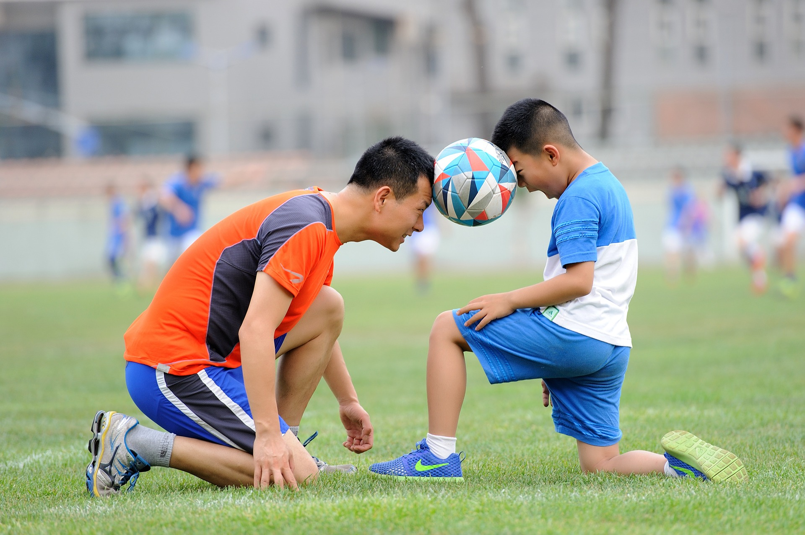
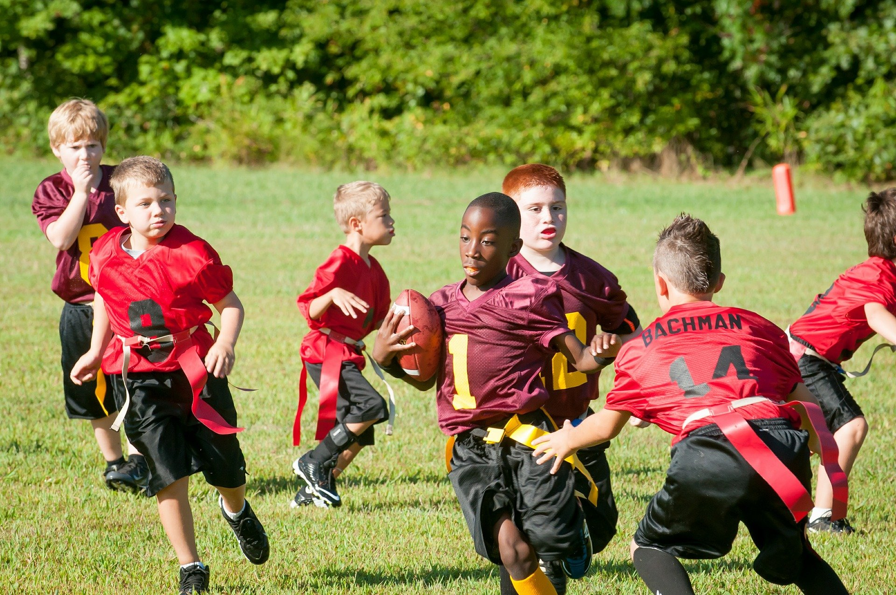

About SportingKids
Founded in 2012, SportingKids is a charity with a mission to get more children aged between 6 and 16 involved in sport. We aim to use the power of sport to tackle inactivity and obesity in West Norfolk by setting up and running events in local villages. The charity also works closely with existing sporting organisations to engage young children in a number of events. We use local school facilities for some of our sports events. A small fee, no more than £5, is payable for most of our activities.
We know that sport, play and physical activity hold the key to tackling so many of these challenges. But something isn't working. Children have never been less active and the young people who are most in need of sport's transformative power are the most likely to miss out.
To help young people discover the joy of movement and nurture happy active lifestyles we need to work with them. We need to support schools, teachers, parents and coaches to tackle their challenges. And, as a charity, we need to ensure our foundations are strong to improve young lives for generations to come.
Equality and Diversity
As we work towards a future where every child enjoys the life-changing benefits that come from play and sport, there can be no bigger priority than breaking down the barriers of inequality and discrimination. Time and again research shows that young people who feel they don’t fit in – perhaps because they have a disability, come from a different background or identify as LGBT – are among the least likely to benefit from the power of sport to help them in life.
Every child is unique and one of the aims of our work is to help them establish who they are, and who they want to be. At a time when acceptance, fitting in and self-esteem are so high on young people’s agenda, this has never been more important.
This commitment to diversity and inclusion not only runs through all of our work, but it guides the way we go about it.
To request further information about our charity, visit the contact us page